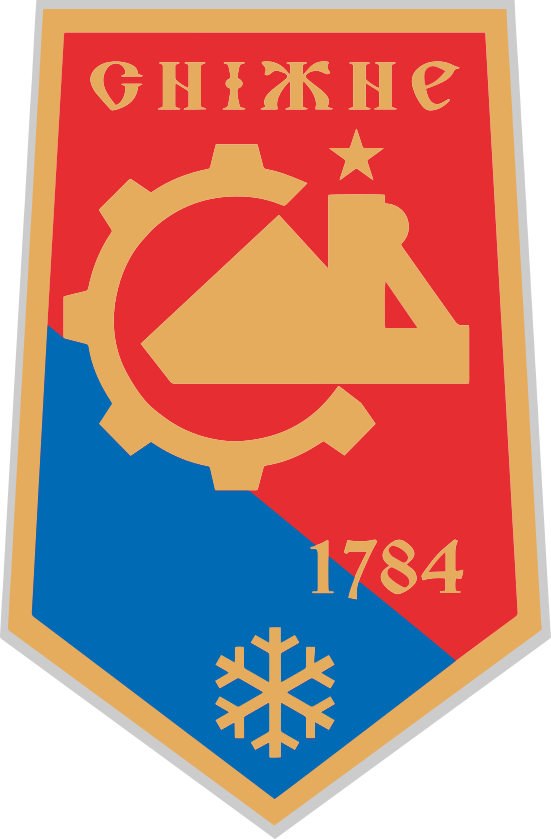

Дата |
Описание |
|---|---|
| 1784 |
В этот год казачий старшина Иван Васильев основал поселение как постоялый двор на месте балки Погорелой возле "Снежного моста" |
| 1864 |
Поселок получил свое своременное название. |
| 1908 |
Открыта шахта "Снежнянский антрацит" (позжк Шахта № 1). |
| 1920 |
Образованы Снежнянский и Ремовский поселковые советы. В советское время стал формироваться центр города — на месте рабочего посёлка шахты № 9. |
| 1939 |
За значительное перевыполнение плановых заданий по угледобыче и высокие показатели цикличности коллектив шахты № 9 был награждён орденом Ленина, а шахты № 10 — орденом Трудового Красного Знамени. |
| 1941 |
Советские органы и войска оставили город, оккупирован германскими войсками. |

